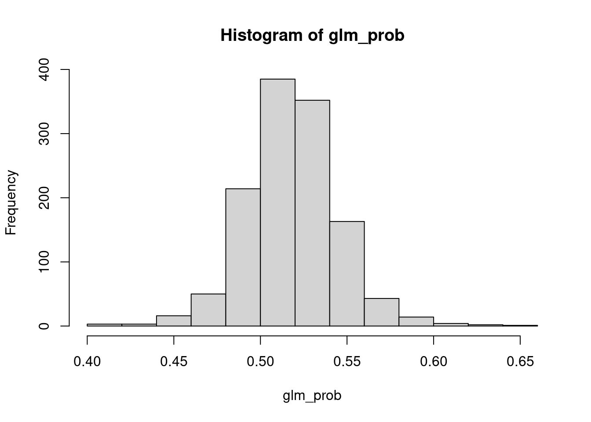
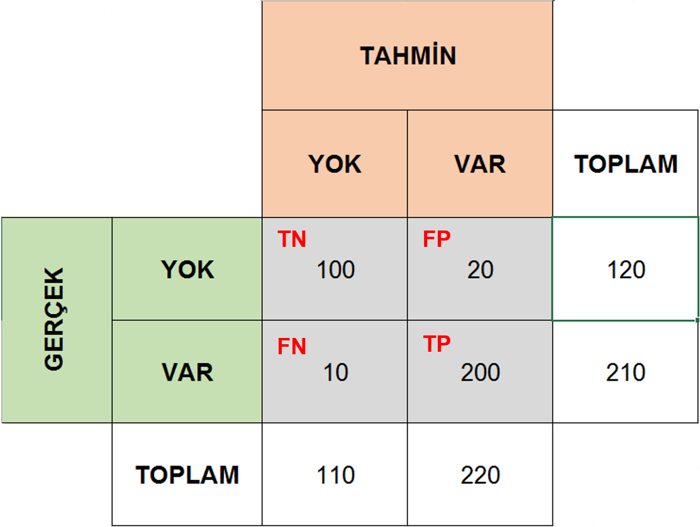

30 Lojistik Regresyon
Bu çalışmada, programda mevcut olan Smarket veri seti (Borsa ile alakalı veriler bulunmaktadır.) üzerinden lojistik regresyon testi gerçekleştirilmiştir. Mevcut borsa verileri kullanılarak model oluşturulup tahminler yapılacaktır ve bu tahminlerin güvenilirliği test edilecektir.
Öncelikle veri setinin olduğu kütüphaneyi çağıralım:
Smarket veri setini inceleyelim ve veri setini daha rahat çalışabilmek adına attach fonksiyonu ile R çevresine bağlayalım:
colnames(Smarket)[1] "Year" "Lag1" "Lag2" "Lag3" "Lag4" "Lag5"
[7] "Volume" "Today" "Direction"dim(Smarket)[1] 1250 9summary(Smarket) Year Lag1 Lag2 Lag3
Min. :2001 Min. :-4.922000 Min. :-4.922000 Min. :-4.922000
1st Qu.:2002 1st Qu.:-0.639500 1st Qu.:-0.639500 1st Qu.:-0.640000
Median :2003 Median : 0.039000 Median : 0.039000 Median : 0.038500
Mean :2003 Mean : 0.003834 Mean : 0.003919 Mean : 0.001716
3rd Qu.:2004 3rd Qu.: 0.596750 3rd Qu.: 0.596750 3rd Qu.: 0.596750
Max. :2005 Max. : 5.733000 Max. : 5.733000 Max. : 5.733000
Lag4 Lag5 Volume Today
Min. :-4.922000 Min. :-4.92200 Min. :0.3561 Min. :-4.922000
1st Qu.:-0.640000 1st Qu.:-0.64000 1st Qu.:1.2574 1st Qu.:-0.639500
Median : 0.038500 Median : 0.03850 Median :1.4229 Median : 0.038500
Mean : 0.001636 Mean : 0.00561 Mean :1.4783 Mean : 0.003138
3rd Qu.: 0.596750 3rd Qu.: 0.59700 3rd Qu.:1.6417 3rd Qu.: 0.596750
Max. : 5.733000 Max. : 5.73300 Max. :3.1525 Max. : 5.733000
Direction
Down:602
Up :648
attach(Smarket)Burada attach fonksiyonu ile verimizi R çevresine bağlayabiliyoruz. Bu sayede veri çerçevesi içindeki sütun isimlerine doğrudan erişebiliriz.
-
YearÖlçümlerin alındığı yıl değişkeni -
Lag1Bir gün önce borsa kapanma fiyatı -
Lag2İki gün önceki borsa kapanma fiyatı -
Lag3Üç gün önceki borsa kapanma fiyatı -
Lag4Dört gün önceki borsa kapanma fiyatı -
Lag5Beş gün önceki borsa kapanma fiyatı -
VolumeBorsanın o günkü işlem hacmi -
TodayO gün borsa kapanma fiyatı -
DirectionBir önceki güne göre borsa yüksek mi yoksa düşük mü kapattıUpDown
Bu modelleme çalışmasındaki amacımız borsanın o günkü seyrini (Direction değişkeni), son beş gün boyunca borsa kapanışı ve o günkü alış satış hacmini kullanarak tahmin etmeye çalışıyoruz.
Verilerle bir model oluşturalım. modeli setteki Directionc verisine göre kurup modelin özetini inceleyelim; modele, modeli tanımlayacak bir isim atayarak glm fonksiyonu ile oluşturduk.
glm.fits <- glm(data = Smarket, Direction~Lag1 + Lag2 +Lag3+ Lag4+ Lag5+ Volume, family = binomial)
summary(glm.fits)
Call:
glm(formula = Direction ~ Lag1 + Lag2 + Lag3 + Lag4 + Lag5 +
Volume, family = binomial, data = Smarket)
Coefficients:
Estimate Std. Error z value Pr(>|z|)
(Intercept) -0.126000 0.240736 -0.523 0.601
Lag1 -0.073074 0.050167 -1.457 0.145
Lag2 -0.042301 0.050086 -0.845 0.398
Lag3 0.011085 0.049939 0.222 0.824
Lag4 0.009359 0.049974 0.187 0.851
Lag5 0.010313 0.049511 0.208 0.835
Volume 0.135441 0.158360 0.855 0.392
(Dispersion parameter for binomial family taken to be 1)
Null deviance: 1731.2 on 1249 degrees of freedom
Residual deviance: 1727.6 on 1243 degrees of freedom
AIC: 1741.6
Number of Fisher Scoring iterations: 3Predict fonksiyonu ile modelimizin ilk 10 parametresini tahmin edelim:
predict.glm(glm.fits, type = "response")[1:10] 1 2 3 4 5 6 7 8
0.5070841 0.4814679 0.4811388 0.5152224 0.5107812 0.5069565 0.4926509 0.5092292
9 10
0.5176135 0.4888378 Tahminleri yeni bir veri içine aktaralım, bu şekilde yeni verimizle sadece tahmin üzerinden işlem yapabiliriz.
Öncelikle tahmin ettiğimiz Direction verilerinin olasılık değerlerini alalım:
glm_prob <- predict.glm(glm.fits, type = "response")Yeni oluşturduğumuz tahmin veri setinin ilk 6 elemanını inceleyelim:
head(glm_prob) 1 2 3 4 5 6
0.5070841 0.4814679 0.4811388 0.5152224 0.5107812 0.5069565 Ve tahmin veri setimizin histogramını oluşturduktan sonra tahmin veri seti için olasılık veri seti oluşturalım:
hist(glm_prob)
Sadece histograma baktığımızda tahmin verilerimizin bir bölgede gruplandığını görebiliriz. Bu bölgeyi sınır noktası olarak kabul ederek çalışmayı 1-0 moduna indirgeyebiliriz. Bu şekilde pozitif ve negatif sonuçlar alabiliriz.
sum fonksiyonu ile 0.5 olarak kabul ettiğimiz ayrımın altında ve üstünde kalan değerlerin sayısını inceleyelim. Bunların hepsi toplandığında dim fonksiyonu ile incelediğimiz veri seti boyutunu elde etmemiz gerekir.
Kaç tane tahmin olaslığı 0.5’den büyük?
sum(glm_prob > 0.5)[1] 964Kaç tanesi 0.5’den küçük?
sum(glm_prob < 0.5)[1] 286Şimdi aynı histogramın 0.5 değerini çizgi ile gösteren versiyonunu oluşturalım:
Şimdi bu değerleri Aşağı (Down) ve Yukarı (Up) olarak tanımlayalım.
glm_pred<- rep("Down", 1250)
glm_pred[glm_prob> 0.5] <- "up"Şimdi bu tanımlanan değerlerin table fonksiyonu ile frekans tablosunu oluşturup sağlamasını yapalım:
table(glm_pred)glm_pred
Down up
286 964 Veri seti içindeki herhangi bir verinin aşağı ve yukarı olarak nasıl gösterilebileceğine bakalım, burada Direction verisinin ilk 5 satırı incelenmiştir. Down olarak gösterilenler 0.5’ten küçük, up olarak gösterilenler ise 0.5’ten büyük olan değerlerdir.
Peki, gerçek değerlerimiz nedir?
Smarket$Direction[1:5][1] Up Up Down Up Up
Levels: Down UpŞimdi ise, hem gerçek hem de tahmin edilmiş değerlerden bir karmaşa matrisi oluşturalım:
table(Smarket$Direction, glm_pred) glm_pred
Down up
Down 145 457
Up 141 507Karmaşa matrisi, bir modelin performansını ölçmek için kullanabikeceğiniz bir frekans tablosu olarak tanımlanabilir.
Az önceki tabloyu oluşturmak için; gerçek değerleri, tahmin edilen değerlerle karşılaştırdık. Basit olsun diye, 1 ve 0 olarak iki durumumuz olsun.
- Gerçek değer 1, tahmin edilen değer 1: Gerçek Pozitif, True Pozitif \(TP\)
- Gerçek değer 1, tahmin edilen değer 0: Yanlış Negatif, False Negative \(FN\)
- Gerçek değer 0, tahmin edilen değer 0: Gerçek Negatif True Negative \(TN\)
- Gerçek değer 0, tahmin edilen değer 1: Yanlış Pozitif False Positive \(FP\)
Toplam örneklem sayımız ise: \(N = TP + TN + TN + FP\)
Bu değerlerin hepsini aşağıdaki şekilde özetleyebiliriz:
knitr::include_graphics(path = "../images/conf_tbl.png")
Bu veri setinde borsa değerleri vardı ve borsadaki düşüşleri ve yükselişleri temsil etmek adına ölçümlerimizi up ve down olarak tanımladık.
Pozitif ve negatiften (1-0) bahsetmiştik. Karmaşa matriksinde bu değerlerin temsil ettiği durumlar şu şekildedir:
Bir takım basit matematiksel formüllerle bu değer oranlarına bakılarak veri seti üzerinde oluşturulan modellerin güvenilirliği incelenebilir.
\[ Doğruluk (Accuracy) = \frac{TP + TN}{N} \] Doğruları ve yanlışları ne kadar yüksek oranda belirleyebilirsek, modelimizin doğruluk payı o kadar yüksektir.
\[ Hata Oranı (Error Rate) = \frac{FN + FP}{N} \]
\[ Hata Oranı (Error Rate) = 1 - Doğruluk (Accuracy) \] Elimizdeki gerçek değerlerin ne kadarını doğru tahmin etmişiz?
\[ DoğruPozitifOranı = \frac{TP}{FN + TP} \]
Elimizdeki gerçek değerlerin ne kadarını yanlış tahmin etmişiz?
\[ Yanlış Pozitif Oranı = \frac{FP}{TN + FP} \]
Peki yaptığımız tahminlerin ne kadarı doğru?
\[ Hassasiyet (Precision) = \frac{TP}{TP + FP} \]
Peki bu öğrendiklerimizi neye ölçekleyebiliriz?
Yeni bir hastalık tanı kiti oluşturduğumuzu düşünelim ve bu kitin performansını test etmek istiyoruz.
Sizce ne yapabiliriz? İlk olarak hasta ve sağlıklı olduklarından emin olduğumuz bir grup kişi ile çalışmaya başlayabiliriz. Sonra bu kişilerden alınan örnekleri geliştirdiğimiz kit ile test ederek bir tahmin elde edebiliriz.
Elde edeceğimiz sonuç ya hasta ya da sağlıklı olacaktır.
Amacımız sizce ne olabilir? Mantık olarak; gerçekten hasta olan kişileri hasta olarak, gerçekten sağlıklı olan kişileri de sağlıklı olarak tahmin edebiliyorsak kitimiz doğru çalışıyor demektir. Modelmizin ya da test kitimizin Doğruluk değer ne kadar yüksekse o kadar iyi çalışan bir kitimiz var demektir.